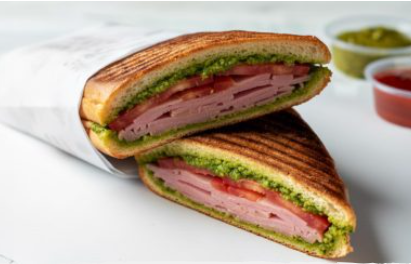

טוסט נקניק
רוצים את הטוסט נקניק האולטימטיבי של הסודוך בבית?
שילוב מושלם של נקניקים משובחים,
ממרח שום סודי ומעטפת קריספי מטריפה מוכן ב-10
דקות בלבד!

מעט על המתכון
המתכון לטוסט הנקניק בסגנון "סודוך" שואב את ההשראה שלו מדוכני אוכל הרחוב המהירים והאהובים, שהפכו לחלק בלתי נפרד מהתרבות הקולינרית המקומית המהירה. המקור שלו מבוסס על הצורך במנה משביעה, עשירה בטעמים ומנחמת, שניתן להכין בקלות ובמהירות בבית תוך שילוב של ממרחים ייחודיים כמו ממרח שום ורטבים עשירים שמשדרגים כל ביס.
מכינים את הטוסט הזה בדרך כלל כאשר מחפשים פתרון מהיר, קליל ומפנק לארוחת ערב מהירה, או כתשובה מושלמת למאנץ' לילי שדורש משהו חם, קריספי ונמס. בזכות ההכנה הפשוטה שלוקחת דקות ספורות בטוסטר לחיץ או במחבת, הוא מתאים מאוד להכנה מהירה עבור הילדים או לאירוח קליל שכולם אוהבים.
מצרכים
- לחמניות (רצוי ארוכות)/ באגט
- חבילת נקניקים שאוהבים
- נקניק סלמי
- פסטרמה
- רוסטביף
- רטבים לפי הטעם: חרדל, מיונז, קטשופ,רוטב צ’ילי מתוק, ממרח פסטו
- רוטב שום חובה
- פרוסות עגבניה לפי הטעם
- פרוסות בצל, מלפפון חמוץ
אופן ההכנה
- מחממים טוסטר לחיץ (אם הטוסטר שלכם חלבי אפשר להכין במחבת).
- חותכים את הלחמניה לאורך.
- מורחים רטבים שאוהבים.
- מניחים מעל את הנקניקים שאוהבים ותוספות לבחירה.
- סוגרים את הלחמניה ושמים בטוסטר (מומלץ לרפד את הטוסטר בנייר אפיה).
*אפשר להכין גם במחבת על הגז: מורחים שמן על החלק החיצוני של הלחמניה (משני הצדדים) ומטגנים על אש בינונית-נמוכה עם מכסה, משני הצדדים. מומלץ ללחוץ על הלחמניה עם מרית במהלך הטיגון כדי לעזור למרכיבים להתאחד וליצור טוסט פריך.

נתוני המתכון
| שלב | טמפרטורה | זמן |
|---|---|---|
| הכנה והרכבה | טמפרטורת החדר | 5 דקות |
| הכנה מקדימה | 2 דקות | |
| צליה בטוסטר | חום בינוני- גבוה | 3 דקות |
| סה"כ זמן הכנה משוער: | 10 דקות | |
| הערה: יש לוודא שהטוסטר חם מראש לקבלת תוצאה קריספית | ||
טיפים
- הסוד הראשון והכי חשוב - מריחת שום על החלק החיצוני של הלחמניה לפני הצלייה בטוסטר! זה מה שיוצר את הקראנץ’ המטורף הזה שכולם מחפשים. אפשר להשתמש בממרח שום ביתי או קנוי. האתר מתכונים 10 דקות
- השילוב המנצח של נקניקים שגורם לילדים לבקש תוספת - תמיד כדאי לשלב לפחות שניים-שלושה סוגים: פסטרמה הודו בדבש עם סלמי איטלקי ונתח כתף. השילוב הזה נותן טעמים משלימים שממש מרימים את הטוסט.
- אם אין לכם טוסטר לחיץ שמתאים לבשרי, אל תוותרו! הטריק להכנת טוסט נקניק פריך במחבת בלי טוסטר - מורחים שמן על החלק החיצוני של הלחם, מטגנים על אש בינונית-נמוכה ולוחצים עם מרית. תוך 3-4 דקות מכל צד תקבלו תוצאה מעולה.